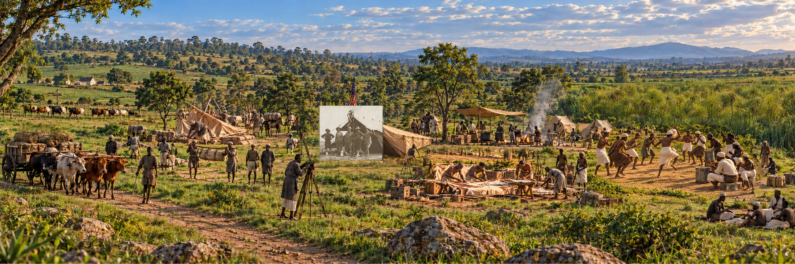

Study 01 · Kamiti, British East Africa · May 1909Buffalo
Buffalo
Corner
Five men posed beside trophies. A wider camp sustained the hunt.
The Wider Camp · A reconstruction of connected momentsScroll / explore ↓
The expanded photograph
Look beyond the frame.
Move across the scene. Reveal the research chapters to examine enlarged details, then locate each one in the panorama.
Interpretive reconstruction. The sepia rectangle is the historical photograph; the wider colour field combines documented context with openly reconstructed scenes rather than claiming a recovered wider negative.
Our method and evidence grades ↗